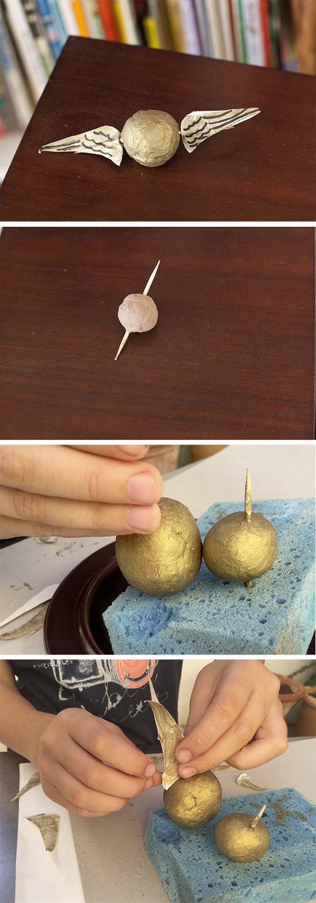

Golden snitch
Noah one morning has made the lightest Quidditch ball ever! Jejeje It is fantastic. I love when they do things without asking for material. With what they find, they make the toys they want. If that sounds sloppy ... it is. Sunday night I might not talk the same way!
